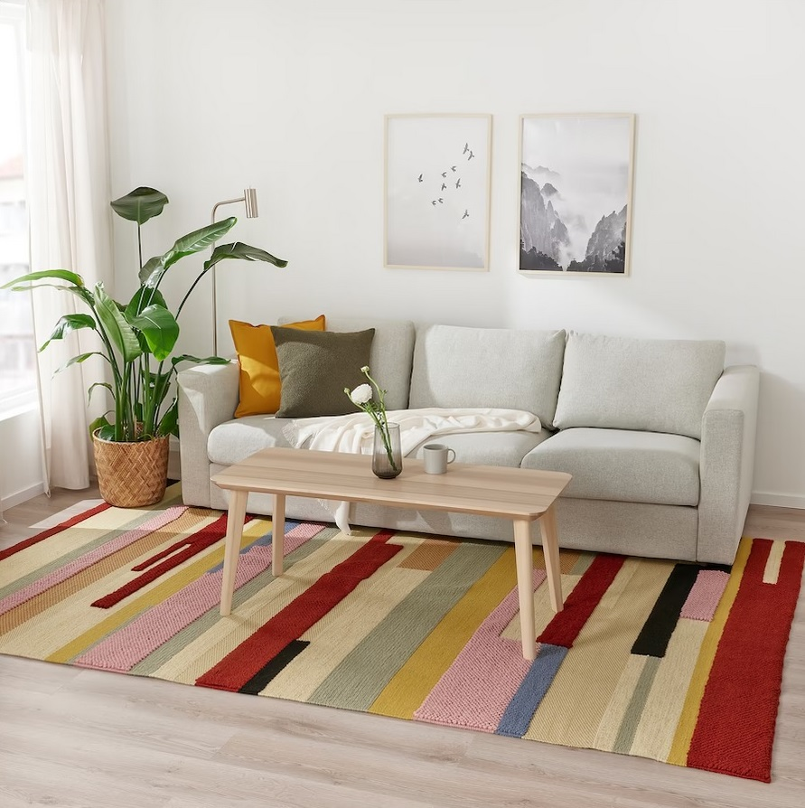

Producten
Ruimte
Nieuw
Aanbiedingen
Waar ben je naar op bezoek?
Brönden
Vloerkleed, laagpolig, handgemaakt veelkleurig/rood, 200x300cm
€399,-

Een mix van verschillende weefsels creëert dit levendige patroon met veel textuur en karakter. Elk tapijt wordt met
de hand geweven door bekwame ambachtslui en is daarom een uniek kanstwerk in zuivere wol.
Kies kleur
Kies afmeting
133x195 cm
170x240 cm
200x300 cm
Hoe kom je eraan?
Levering
Beschikbaar voor 7521AN
Bestellen & ophalen
Verkrijgbaar bij IKEA Hengelo
In de winkel
Op voorraad in Hengelo
Voeg toe aan winkelwagen
Productinformatie